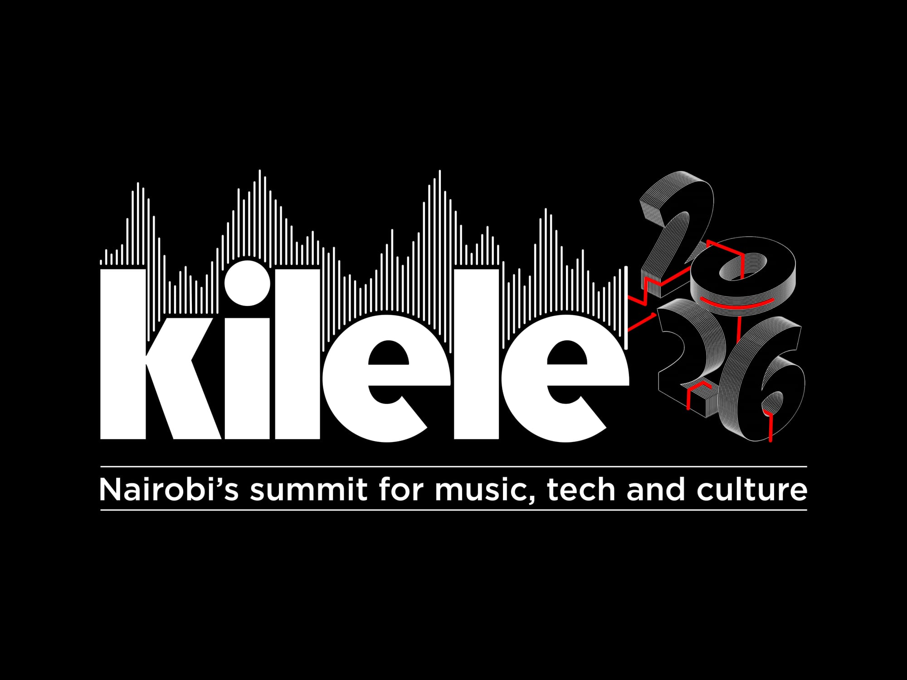

Production & Curation
Kilele Summit

Kilele is East Africa's first and only summit for music, tech and culture. Established to platform artists and collectives from the region working in diverse, under-represented styles from the folkloric to the futuristic, Kilele mixes panels, presentations and workshops with installations, showcases and after-parties over six thrilling days in The Mall, Nairobi each February.
- RoleProducer - Showcases
- Years2025, 2026